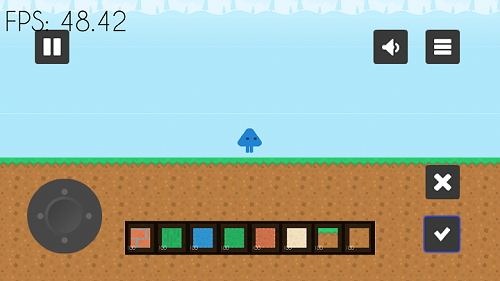

movement pad is provided on the screen during gameplay. use it to move the player. buttons for placing(tick) and deleting(cross) a tile has also been provided on the screen during gameplay. inventory is on the lower portion of the screen and is used to access various types of tiles and other items. Buttons for sound on/off and returning to main menu are also there on the gameplay screen.

player can place tiles upto any distance visible on the gameplay screen in creative mode
inventory contains all the items acquired by the user like different types of tiles and other things. tile of a particular type can be selected by pressing on the corrosponding tile in the inventory.